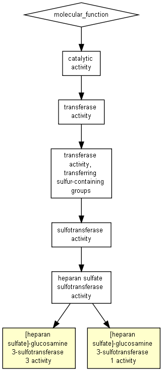

P-value color scale
| > 10-3 |
10-3 to 10-5 |
10-5 to 10-7 |
10-7 to 10-9 |
< 10-9 |

| GO term |
Description |
P-value |
FDR q-value |
Enrichment (N, B, n, b) |
Genes |
| GO:0033872 |
[heparan sulfate]-glucosamine 3-sulfotransferase 3 activity |
3.63E-5 |
1.64E-1 |
165.09 (15353,2,93,2) |
[+] Show genes
HS3ST3A1 - heparan sulfate (glucosamine) 3-o-sulfotransferase 3a1
HS3ST3B1 - heparan sulfate (glucosamine) 3-o-sulfotransferase 3b1
|
| GO:0008467 |
[heparan sulfate]-glucosamine 3-sulfotransferase 1 activity |
7.47E-4 |
1E0 |
47.17 (15353,7,93,2) |
[+] Show genes
HS3ST3A1 - heparan sulfate (glucosamine) 3-o-sulfotransferase 3a1
HS3ST3B1 - heparan sulfate (glucosamine) 3-o-sulfotransferase 3b1
|
Species used: Homo sapiens
The system has recognized 15826 genes out of 16585 gene terms entered by the user.
15826 genes were recognized by gene symbol and 0 genes by other gene IDs .
105 duplicate genes were removed (keeping the highest ranking instance of each gene) leaving a total of 15721 genes.
Only 15353 of these genes are associated with a GO term.
Output in Microsoft Excel format
The GOrilla database is periodically updated using the GO database and other sources.
The GOrilla database was last updated on Mar 6, 2021
This results page will be available on this site for one month from now (until
Jan 26, 2023
). You can bookmark this page and come back to it later.
'P-value' is the enrichment p-value computed according to the mHG or HG model. This p-value is not corrected for multiple testing of 4519 GO terms.
'FDR q-value' is the correction of the above p-value for multiple testing using the Benjamini and Hochberg (1995) method.
Namely, for the ith term (ranked according to p-value) the FDR q-value is (p-value * number of GO terms) / i.
Enrichment (N, B, n, b) is defined as follows:
N - is the total number of genes
B - is the total number of genes associated with a specific GO term
n - is the number of genes in the top of the user's input list or in the target set when appropriate
b - is the number of genes in the intersection
Enrichment = (b/n) / (B/N)
Genes: For each GO term you can see the list of associated genes that appear in the optimal top of the list.
Each gene name is specified by gene symbol followed by a short description of the gene
Back to the GOrilla main page